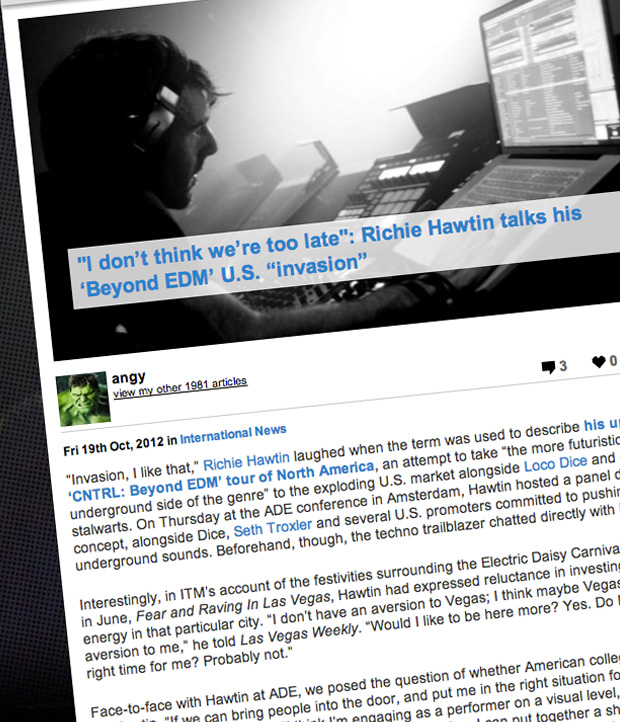

"I don’t think we’re too late": Richie Hawtin talks his ‘Beyond EDM’ U.S. “invasion”
{kind=link}

“Invasion, I like that,” Richie Hawtin laughed when the term was used to describe his upcoming ‘CNTRL: Beyond EDM’ tour of North America, an attempt to take “the more futuristic and underground side of the genre” to the exploding U.S. market alongside Loco Dice and other techno stalwarts. On Thursday at the ADE conference in Amsterdam, Hawtin hosted a panel discussing the concept, alongside Dice, Seth Troxler and several U.S. promoters committed to pushing underground sounds. Beforehand, though, the techno trailblazer chatted directly with inthemix.
Interestingly, in ITM’s account of the festivities surrounding the Electric Daisy Carnival in Las Vegas in June, Fear and Raving In Las Vegas, Hawtin had expressed reluctance in investing too much energy in that particular city. “I don’t have an aversion to Vegas; I think maybe Vegas has an aversion to me,” he told Las Vegas Weekly. “Would I like to be here more? Yes. Do I think it’s the right time for me? Probably not.”
Face-to-face with Hawtin at ADE, we posed the question of whether American college kids are ready for Hawtin. “If we can bring people into the door, and put me in the right situation for a ‘do my best’ type of set,” Hawtin told ITM. “I think I’m engaging as a performer on a visual level, and on a music and sonic level, and the kind of production and stuff I bring, I can put together a show that can be accepted and enjoyed by North Americans, and much more people than have enjoyed it so far. If I didn’t think so, I wouldn’t be putting myself on a tour bus for 17 days,” he laughed.
On the question of whether it’s the right time to embark on the ‘Beyond EDM’ project, Hawtin was a little more pensive in his response. “Let me put it like this. I don’t think we’re too late, I think we’re right on the cusp, maybe being a little too early. But this is stage one. If this goes well, there’s the West Coast, there’s middle America, there’s a lot more we can do,” he said. “Myself and Dice and other friends are all committed to trying to draw the attention of the youth of today, while they’re connected in some way to electronic music, grabbing their attention somehow and giving them the opportunity to hear something a little different.”
In March 2013, Hawtin will of course return to Australia in very fine company for the Cocoon Heroes arena at Future Music Festival. His fellow ‘Beyond EDM’ flag-bearer Seth Troxler will be warming things up, with prime-time no doubt reserved for the main man himself, Sven Vath. Completing the picture is Chilean savant Ricardo Villalobos and Items & Things boss Magda, last seen in Australia over the 2005/2006 New Year’s period. Expect to hear “something a little different” from what’s going down elsewhere at the festival…